정보통신기사 (2022-06-25 기출문제)
1과목: 정보전송일반
1. SDH(Synchronous Digital Hierarchy : 동기식 디지털 계위) 특징이 아닌 것은?
- TDM 방식으로 다중화 함
- 동기식 디지털 기본 계위신호 STM-1을 기본으로 권고 함
- 프레임 주기는 125[μs] 임
- 9행×90열 구조로 되어 있음
(정답률: 71%)

2. 신호 x(t)의 푸리에 변환을 X(f)라고 할 때, 다음 함수의 푸리에 변환으로 맞는 것은?
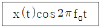
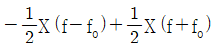
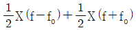
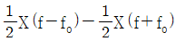
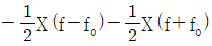
(정답률: 76%)
3. 무선환경에서 다중입출력(MIMO) 안테나의 송신측과 수신측 기술의 궁극적 목표가 각각 알맞게 연결된 것은?
- 송신측-공간간섭 제거, 수신측-채널용량 증대
- 송신측-공간간섭 제거, 수신측-공간간섭 제거
- 송신측-채널용량 증대, 수신측-채널용량 증대
- 송신측-채널용량 증대, 수신측-공간간섭 제거
(정답률: 72%)
4. 반송파를 여러 개 사용해 일정한 주기마다 바꾸며 신호를 대역확산하여 전송하는 기술은?
- 직접확산(DS)
- 주파수 도약(FH)
- 시간도약(TH)
- 첩(Chirp)
(정답률: 70%)
5. 다음 중 대류권파 페이딩의 종류와 방지대책으로 연결이 틀린 것은?
- 신틸레이션 페이딩 – AGC.AVC 이용하여 방지
- K형 페이딩 – AGC.AVC 이용하여 방지
- 산란형페이딩 – diversity 이용하여 방지
- Duct형 페이딩 – AGC.AVC 이용하여 방지
(정답률: 65%)
6. 광케이블의 광학파라미터가 아닌 것은?
- 편심률
- 개구수
- 수광각
- 모드 수
(정답률: 62%)
7. 통신속도가 2000[bps]이고 1시간 전송했을 때 에러 비트 수가 36[bit]였다면 비트에러율은?
- 2.5×10-5
- 2.5×10-6
- 5×10-5
- 5×10-6
(정답률: 72%)
8. 주기 신호의 주파수 스펙트럼 형태는?
- 선 스펙트럼
- 연속 스펙트럼
- 사각 스펙트럼
- 정현 스펙트럼
(정답률: 66%)
9. 채널의 대역폭이 1,000[Hz]이고 신호대 잡음비가 3일 경우 채널용량은 얼마인가? (단, 채널용량은 샤논의 정리를 이용하여 계산)
- 1,500[bps]
- 2,000[bps]
- 2,500[bps]
- 3,000[bps]
(정답률: 71%)
10. 디지털 전송방식에서 원신호속도, 샘플링방식, 베어러 속도가 잘못 연결된 것은?
- 1,200[bps] : 4,800[bps] 단점 샘플링 : 6.4[kbps]
- 2,400[bps] : 2,400[bps] 단점 샘플링 : 3.2[kbps]
- 4,800[bps] : 4,800[bps] 단점 샘플링 : 6.4[kbps]
- 9,600[bps] : 9,600[bps] 단점 샘플링 : 12.8[kbps]
(정답률: 76%)
11. 다음 설명의 괄호 안에 들어갈 용어로 알맞은 것은?
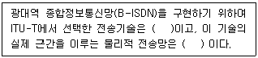
- SDH/PDH, X.25
- ATM, SDH/SONET
- xDSL, SDH/PDH
- LAN, X.25
(정답률: 65%)
12. 다음 그림과 같은 발진회로에서 발진주파수는?
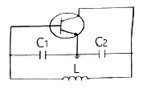
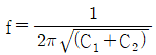
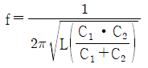
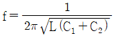
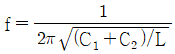
(정답률: 74%)
13. 다음 중 a-b가 순서대로 올바르게 짝지어진 것은?
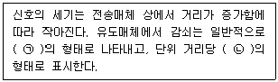
- 지수함수 – S/N비
- 로그함수 - 데시벨
- 지수함수 - Baud
- 로그함수 – BPS
(정답률: 76%)
14. 이동통신망에서 발생하는 페이딩 중 고층 건물, 철탑 등 인공구조물에 의하여 발생하는 페이딩은?
- Long-term Fading
- Short-term Fading
- Rician Fading
- Mid-term Fading
(정답률: 77%)
15. 효율적인 전송을 위해 하나의 전송로에 여러 신호를 동시에 전송하는 기술은?
- 다중화
- 부호화
- 압축화
- 양자화
(정답률: 85%)
16. 다음 중 LC발진회로에서 발진주파수의 변동요인과 대책이 틀린 것은?
- 전원전압의 변동 : 직류안정화 바이어스 회로를 사용
- 부하의 변동 : Q가 낮은 수정편을 사용
- 온도의 변화 : 항온조를 사용
- 습도에 의한 영향 : 회로의 방습 조치
(정답률: 78%)
17. 다음 중 직교 진폭변조(QAM) 방식에 대한 설명으로 틀린 것은?
- 진폭과 위상을 혼합하여 변조하는 방식이다.
- 제한된 채널에서 데이터 전송률을 높일 수 있다.
- 검파는 동기 검파나 비동기 검파를 사용한다.
- 신호 합성시 I-CH과 Q-CH이 완전히 독립적으로 존재한다.
(정답률: 63%)
18. 다음 중 동축 케이블에 대한 설명으로 틀린 것은?
- 영상 전송에서 우선 고려사항은 감쇄이며, 이를 위해 75[Ω] 특성 임피던스를 많이 사용한다.
- 특성 임피던스는 내외부 도체의 직경으로부터는 영향을 받지 않는다.
- 통신, 계측, 안테나 등의 Radio Frequency 영역에서는 50[Ω] 특성 임피던스를 사용한다.
- BNC커넥터(Connector)는 N커넥터보다 차단주파수(Cutoff Frequency)가 낮다.
(정답률: 73%)
19. 다음 중 데이터 동기식 전송 방식에 대한 설명으로 틀린 것은?
- 비트 동기와 블록 동기가 있다.
- BBC, BASIC Protocol에서 사용한다.
- 각 비트의 길이는 통신속도에 따라 정해지면 일정하다.
- 스타트와 스톱 비트로 문자를 구분한다.
(정답률: 72%)
20. 다음 중 부가식 확인 응답(Piggyback Acknowledgement)이란?
- 수신 측이 에러를 검출한 후 재전송해야 하는 프레임의 개수를 송신 측에게 알려주는 응답
- 수신한 전문에 대해 확인 응답 전문을 따로 보내지 않고, 상대편에게 전송되는 데이터 전문에 확인 응답을 함께 실어 보내는 방법
- 송신 측이 일정한 시간 안에 수신 측으로부터 ACK가 도착하지 않으면 에러로 간주하는 것
- 송신 측이 타입-아웃 시간을 설정하기 위한 목적으로 송신한 테스트 프레임에 대한 응답
(정답률: 71%)
2과목: 정보통신기기
21. 자유공간에서 송수신 안테나간 거리 2[km]에 1[GHz]의 주파수로 통신링크를 구성하고자 한다. 이에 대한 전송경로의 손실은 약 얼마인가?
- 118.52[dB]
- 128.52[dB]
- 98.52[dB]
- 108.52[dB]
(정답률: 50%)
22. 이동통신의 세대와 기술이 바르게 짝지어진 것은?
- 1세대 : GSM
- 2세대 : AMPS
- 3세대 : WCDMA
- 4세대 : CDMA
(정답률: 75%)
23. 다음 DTV의 특징 중 잡음에 강하고, 전송 에러 자동 교정 및 Ghost 감소의 특징으로 맞는 것은?
- 양방향화
- 고 품질화
- 고 기능화
- 다 채널화
(정답률: 75%)
24. 기존 통신 및 방송사업자와 더불어 제3사업자들이 인터넷을 통해 드라마나 영화 등의 다양한 미디어 콘텐츠를 제공하는 서비스를 무엇이라 하는가?
- OTT
- IPTV
- VOD
- P2P
(정답률: 75%)
25. 전화기와 교환기 간의 접속 제어 정보를 전달하는 신호방식은?
- 가입자선 신호 방식
- 중계선 신호 방식
- No.6 신호 방식
- No.7 신호 방식
(정답률: 63%)
26. 입력신호가 x(t) = 10cos8000πt와 같이 주어졌을 때 aliasing이 나타나지 않는 이상적인 최소 표본화 주파수는?
- 16,000
- 8,000
- 4,000
- 2,000
(정답률: 62%)
27. 다음 중 영상회의 시스템의 구성요소로 틀린 것은?
- SCN(주사회로)
- 음성 신호처리
- 영상 신호처리
- TV 프로세서(송수신 장치)
(정답률: 70%)
28. 다음 광통신 장치에 대한 설명이 틀린 것은?
- OLT(Optical Line Terminal) : 국사내에 설치되어 백본망과 가입자망을 서로 연결하는 광가입자망 구성장치
- ONT(Optical Network Terminal) : 가입자와 가입자를 광을 통해 서로 연결해주는 광통신장치
- ONU(Optical Network Unit) : 주거용 가입자 밀집 지역의 중심부에 설치하는 소규모의 옥외/옥내용 광통신 장치
- Backbone : 네트워크상에서 중요 공유자원들을 연결하기 위한 중추적인 기간 네트워크
(정답률: 57%)
29. 다음 중 멀티미디어의 특징으로 틀린 것은?
- 디지털화
- 통합성
- 단방향성
- 상호작용성
(정답률: 80%)
30. 다음 스마트공장의 구성 요소 중 IIoT(Industrial Internet of Things)에 해당하지 않는 것은?
- ERP(Enterprise Resource Planning)
- 각종 센서(Sensor)
- 엑츄에이터(Actuator)
- 제어기(Controller)
(정답률: 70%)
31. 다음 중 CCTV와 CATV에 대한 설명으로 틀린 것은?
- CCTV는 헤드엔드, 중계전송망, 가입자설비로 구성되어 있다.
- CCTV는 특정 건물 및 공장지역 등 서비스 범위가 한정적이다.
- CATV는 다수의 채널에 쌍방향성 서비스를 제공한다.
- CATV는 방송국에서 가입자까지 케이블을 통해 프로그램을 전송하는 시스템이다.
(정답률: 71%)
32. 다음에서 설명하고 있는 용어는?
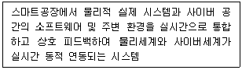
- CPS(Cyber-Physical System)
- MES(Manufacturing Execution System)
- SCM(Supply Chain Management)
- PLM(Product Lifecycle Management)
(정답률: 73%)
33. 정보통신시스템의 통신 회선 종단에 위치한 신호변환장치 중에서 디지털 전송로인 경우 송신측에서 단극성 신호를 쌍극성 신호로 변환하는 장치는?
- CODEC
- DSU
- CSU
- CPU
(정답률: 77%)
34. 이동 통신 시스템에서 hand off 기능에 대한 설명으로 옳은 것은?
- 자동 우회 기능 및 통화량의 자동 차단 기능
- 한 서비스 지역 내에서 다수의 사용자가 동시에 통화할 수 있는 기능
- 사용자가 가입 등록되어 있는 서비스 사업자의 시스템 이외의 시스템에서도 정상적인 서비스를 제공하는 기능
- 사용자가 현재 서비스를 제공받고 있는 기지국을 벗어나더라도 인접 기지국으로 채널을 자동으로 전환해 주는 기능
(정답률: 80%)
35. 홈네트워크건물 인증 심사기준에 따른 등급의 종류가 아닌 것은?
- 홈IoT
- AA등급
- A등급
- B등급
(정답률: 65%)
36. 가상현실(VR) 및 증강 현실(AR)의 기술적 발전 방향이 아닌 것은?
- 오감기술 도입
- 다중 사용자 환경기술
- 증강현실(AR)로 단일화
- 동적기술로 임장감 확대
(정답률: 81%)
37. 홈네트워크 설비 중 정전에 대비하여 예비전원이 공급되는 설비가 아닌 것은?
- 홈게이트웨이
- 감지기
- 세대단말기
- 단지 서버
(정답률: 64%)
38. 다음 중 집중화기에 대한 설명으로 옳지 않은 것은?
- m개의 입력 회선을 n개의 출력 회선으로 집중화하는 장비이다.
- 집중화기의 구성 요소로는 단일 회선 제어기, 다수 선로 제어기 등이 있다.
- 집중화기는 정적인 방법(Static Method)의 공동 이용을 행한다.
- 부채널의 전송속도의 합은 Link 채널의 전송속도보다 크거나 같다.
(정답률: 65%)
39. 빌딩안내시스템 중 승강기 안내시스템에 대한 설명으로 틀린 것은?
- Display에 전송되는 선로는 반드시 동축케이블을 사용한다.
- 다양한 메시지 표출 기능을 제공하여야 한다.
- 임의적으로 운용시간을 지정하여 LCD를 제어한다.
- Display는 돌출형 매립형으로 설치한다.
(정답률: 73%)
40. 지능형 교통체계기술(ITS) 중에서 차량 긴 통신 기술(Vehicle to Vehicle Communication), 차량과 인프라 간 통신 기술((Vehicle to Infrastructure Communication)에 활용되는 기술은?
- WAVE
- IEEE 802.11s
- WiBro
- LTE-R
(정답률: 72%)
3과목: 정보통신 네트워크
41. 다음 중 LAN 장비에서 네트워크계층의 연결장비인 것은?
- Router
- Bridge
- Repeater
- Hub
(정답률: 76%)
42. OSI 7계층과 TCP/IP 프로토콜의 관계에 대한 설명으로 틀린 것은?
- OSI 모델은 7개 계층으로, TCP/IP 프로토콜은 4개 계층으로 구성되어 있다.
- TCP/IP 프로토콜의 계층 구조는 OSI 모델의 계층 구조와 정확하게 일치하지 않는다.
- TCP는 OSI 참조 모델의 네트워크 계층에 대응되고, IP는 트랜스포트 계층에 대응된다.
- TCP/IP 프로토콜은 OSI 참조 모델보다 먼저 개발되었다.
(정답률: 68%)
43. IPv4의 C 클래스 네트워크를 26개의 서브넷으로 나누고, 각 서브넷에는 4~5개의 호스트를 연결하려고 한다. 이러한 서브넷을 구성하기 위한 서브넷 마스크 값은?
- 255.255.255.192
- 255.255.255.224
- 255.255.255.240
- 255.255.255.248
(정답률: 67%)
44. 프로토콜의 서로 다른 네트워크 사이를 결합하는 것은?
- 리피터
- 브리지
- 라우터
- 게이트웨이
(정답률: 57%)
45. 다음은 무엇에 대한 설명인가?
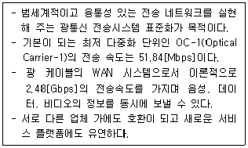
- SONET(synchronous optical network)
- SDH(synchronous digital hierarchy)
- PDH(plesiochronous digital hierarchy)
- OTN(optical transport network)
(정답률: 66%)
46. 다음 중 마이크로파 통신방식의 특징이 아닌 것은?
- 외부의 영향을 많이 받지만 광대역성이 가능하다.
- 예민한 지향성을 가진 고이득 안테나를 얻을 수 있다.
- 안정된 전파 특성을 갖는다.
- S/N 개선도를 크게 할 수 있다.
(정답률: 59%)
47. 다음 중 네트워크 대역이 다른 네트워크에서 동적으로 IP 부여를 하기 위해 필요한 DHCP(Dynamic Host Configuration Protocol) 구성 요소가 아닌 것은?
- DHCP 서버
- DHCP 클라이언트
- DHCP 릴레이
- DHCP 에이전트
(정답률: 55%)
48. HUB에 대한 설명으로 맞는 것은?
- 근거리 통신망(LAN)과 단말 장치를 접속하는 장치이다.
- 근거리 통신망(LAN)과 외부 네트워크를 연결하여 다중 경로를 제어하는 장치이다.
- OSI 7 Layer에서 2계층의 기능을 담당하는 장치이다.
- 아날로그 선로에서 신호를 분배, 접속하는 중계 장치이다.
(정답률: 65%)
49. 다음 ITU-T 권고안 시리즈 중 축적 프로그램 제어식 교환의 프로그램 언어에 관한 사항을 규정한 것은?
- I
- Q
- P
- Z
(정답률: 57%)
50. 라우팅의 루핑 문제를 방지하기 위한 여러 가지 방법 중 라우팅 정보가 들어온 곳으로는 같은 라우팅 정보를 내보내지 않는 방법을 무엇이라 하는가?
- 최대 홉 카운트(Maximum Hop Count)
- 스플릿 호라이즌(Split Horizon)
- 홀드 다운 타이머(Hold Down Timer)
- 라우트 포이즈닝(Route Poisoning)
(정답률: 70%)
51. 데이터링크 계층(Datalink Layer)에서 전송제어 프로토콜의 절차 단계 중 옳은 것은?
- 데이터링크 설정 → 회선접속 → 정보전송 → 회선절단 → 데이터링크 해제
- 정보전송 → 회선접속 → 데이터링크 설정 → 데이터링크 해제 → 회선절단
- 회선접속 → 데이터링크 설정 → 정보전송 → 데이터링크 해제 → 회선절단
- 회선접속 → 데이터링크 설정 → 데이터링크 해제 → 회선절단 → 정보전송
(정답률: 74%)
52. SNMP(Simple Network Management Protocol)에서 네트워크 장치의 상태를 감시하는 요소는?
- NetBEUI
- 에이전트(Agent)
- 병목
- 로그
(정답률: 65%)
53. 다음 중 이동통신 시스템에서 전체 가입자의 관리를 책임지는 데이터베이스는?
- HLR(Home Location Register)
- EIR(Equipment Identity Register)
- VLR(Visitor Location Register)
- AC(Authentication Center)
(정답률: 67%)
54. 다음 중 IP주소와 서브넷 마스크로 표시된 1.1.1.1 255.255.0.0을 CIDR 표기법으로 표현한 것은 무엇인가?
- 1.1.1.1/4
- 1.1.1.1/8
- 1.1.1.1/10
- 1.1.1.1/16
(정답률: 68%)
55. 다음 중 ATM셀 헤더를 구성하는 필드(field)에 대한 설명으로 틀린 것은?
- PT : 페이로드에 실린 정보의 종류를 표시한다.
- VPI : 셀이 속한 가상경로를 식별하기 위해 사용한다.
- CLP : 망 폭주 시 셀이 폐기될 우선순위를 나타낸다.
- HEC : 헤더 자체오류 유무를 검사하기 위한 것으로 해밍코드(Hamming Code)를 사용한다.
(정답률: 65%)
56. 10Base-5 이더넷의 기본 규격으로 맞는 것은?
- 전송 매체가 꼬임선이다.
- 전송 속도가 10[Mbps]이다.
- 전송 최대 거리가 50[m]이다.
- 전송 방식이 브로드밴드 방식이다.
(정답률: 70%)
57. 다음 중 데이터 버스트(Burst)를 송신하고자 할 때 사전에 시간대역의 사용을 요구하여, 지정된 시간대역으로 버스트를 송신하는 방식은?
- A-ALOHA
- P-ALOHA
- S-ALOHA
- R-ALOHA
(정답률: 30%)
58. 인터넷 네트워크의 자율시스템(Autonomous System)에 관한 설명으로 옳은 것은?
- 내부에서 사용하게 되는 라우팅 프로토콜을 IGP(Interior Gateway Protocol)라 하는데 대표적인 것은 RIP와 OSPF가 있다.
- 대표적인 AS간 라우팅 프로토콜은 EGP(Exterior Gateway Protocol)가 있는데 EGP 이전에는 BGP가 이용되었다.
- EGP(Exterior Gateway Protocol)는 RIP나 OSPF와 같게 기본통신을 TCP 연결을 맺어서 동작한다.
- EGP(Exterior Gateway Protocol)는 목적지에 도달하기 위해 경유하는 자율시스템의 순서를 전송하여 이용하게 되므로 RIP에서의 문제점을 해결한다.
(정답률: 56%)
59. 스마트도시(Smart City) 기반시설에 해당하지 않는 것은?
- 기반시설 또는 공공시설에 건설·정보통신 융합기술을 적용하여 지능화된 시설
- 초연결지능통신망
- 도시정보 데이터베이스
- 스마트도시 통합운영센터 등 스마트도시의 관리·운영에 관한 시설
(정답률: 74%)
60. 다음 중 VLAN의 종류로 거리가 먼 것은?
- 포트기반(Port-based) VLAN
- LLC주소기반 VLAN
- 프로토콜 기반 VLAN
- IP서브넷을 이용한 VLAN
(정답률: 59%)
4과목: 정보시스템 운용
61. ARP(Address Resolution Protocol) 스푸핑은 몇 계층 공격에 해당하는가?
- 1계층
- 2계층
- 3계층
- 4계층
(정답률: 53%)
62. UTM(Unified Threat Management)의 장점이 아닌 것은?
- 패킷 필터링을 통한 내외부 네트워크 접근 통제
- 공간 절약
- 관리 용이
- 장애발생시 전체에 영향이 없음
(정답률: 70%)
63. 다음 중 정보통신망 유지보수 OS패치를 위한 세부 검토 항목으로 틀린 것은?
- 서버, 네트워크 장비, 보안시스템은 중요도에 따라 패치관리 및 정책 및 절차를 수립하고 이행해야 한다.
- 주요서버, 네트워크 장비에 설치된 OS, 소프트웨어 패치적용 현황을 관리해야 한다.
- 주요서버, 네트워크 장비, 정보보호시스템의 경우 공개 인터넷접속을 통해 패치를 실시한다.
- 운영시스템의 경우 패치 적용하기 전 시스템 가용성에 미치는 영향을 분석하여 패치를 적용한다.
(정답률: 75%)
64. 다음 중 논리적 망분리의 특징으로 틀린 것은?
- 가상화 등의 기술을 이용하여 논리적으로 분리하여 운영
- 상대적으로 관리가 용이하여 효율성 높음
- 구성 방식에 따라 취약점 발생하여 상대적으로 낮은 보안성
- 완전한 망분리방식으로 가장 안전한 방식
(정답률: 71%)
65. 정보통신시스템의 하드웨어 설계 시 고려사항이 아닌 것은?
- 운용, 유지 보수 및 관리
- 민원 가능성
- 신뢰성
- 전기적 및 물리적 성능
(정답률: 77%)
66. 방송전송시스템에 따른 방송 종류를 바르게 연결한 것은?
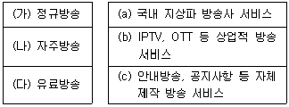
- (가)-(a), (나)-(b), (다)-(c)
- (가)-(b), (나)-(a), (다)-(c)
- (가)-(a), (나)-(c), (다)-(b)
- (가)-(b), (나)-(c), (다)-(a)
(정답률: 83%)
67. 다음에서 설명하고 있는 용어는?
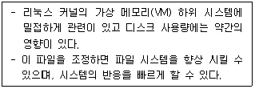
- bdflush
- buffermem
- freepages
- kswapd
(정답률: 64%)
68. IoT 미들웨어 플랫폼을 활용한 무선모듈형 화재감지 시스템의 구성시 불필요한 설비는 무엇인가?
- 화재감지센서
- 데이터베이스
- 키오스크
- 빅데이터 분석서버
(정답률: 79%)
69. 다음 중 기술적 보안 기술 요소가 아닌 것은?
- 보안 표준
- SSO(Single Sign On)
- EAM(Enterprise Access Management)
- SRM(Security Risk Management)
(정답률: 39%)
70. 다음 중 물리적 보안구역에 대한 자체 점검항목으로서 적절하지 못한 것은?
- 특별한 보호가 필요한 시설과 장비를 보호하기 위한 보호구역을 정의하고, 이에 따른 보안대책을 수립하여 이행하고 있는가를 점검
- 물리적 보호구역이 필요한 보안 등급에 따라 정의되고 각각에 대한 보안조치와 절치가 수립되어 있는가를 점검
- 일반인의 출입경로가 보안지역을 지나가지 않도록 배치되어 있는가를 점검
- 응용시스템 구현시 코딩표준에 따라 응용시스템을 구현하고 보안요구사항에 대한 시험 사항의 점검
(정답률: 70%)
71. 자료를 압축하기 위하여 버로우스-윌러(Burrows-Wheeler) 블록 정렬 텍스트 압축 알고리즘(Block-sorting text compression algorithm)과 호프만 코딩(Huffman coding)을 사용하는 유틸리티는?
- dispatch
- Runlevel
- bunzip2
- schedule
(정답률: 67%)
72. 수리가 가능한 시스템이 고장난 후부터 다음 고장이 날 때까지의 평균시간을 의미하는 것은?
- MTBF
- MTTF
- MTTR
- Availability
(정답률: 63%)
73. 네트워크를 모니터링하고 관리하는데 사용되는 하드웨어와 소프트웨어의 조합으로 구성되는 망관리 시스템은?
- NMS
- DOCSIS
- SMTP
- LDAP
(정답률: 68%)
74. 광케이블을 설치할 때 고려사항이 아닌 것은?
- 최소 굴곡반경 이상 구부리지 않는다.
- 포설할 때는 허용 장력 이상의 힘으로 당겨야 한다.
- 분기 개소마다 용도별로 표찰을 부착하여야 한다.
- 포설 시 꼬이거나 비틀리지 않도록 한다.
(정답률: 81%)
75. 다음 중에서 망분리 적용시 주요 고려사항으로 옳은 것을 모두 고른 것은?
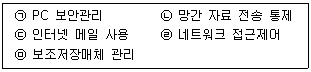
- ㉠, ㉡
- ㉠, ㉡, ㉢
- ㉠, ㉡, ㉢, ㉣
- ㉠, ㉡, ㉢, ㉣, ㉤
(정답률: 65%)
76. 정보통신공사에서 접지를 개별적으로 시공하여 다른 접지로부터 영향을 받지 않고 장비나 시설을 보호하는 접지 방식은?
- 공통접지
- 독립접지
- 보링접지
- 다중접지
(정답률: 80%)
77. 다음 중 웹서버에서 APM을 설치하기 위한 명령어가 아닌 것은?
- yum –y install httpd
- yum –y install MySQL
- yum –y install php
- yum –y install proftpd
(정답률: 64%)
78. 클라우드서비스 어플라이언스(Appliance) 타입 부하분산 장비가 아닌 것은?
- BIG-IP
- NetScale
- Ace 4700
- LVS(Linux Virtual Server)
(정답률: 62%)
79. WLAN(Wireless Local Area Network)의 MAC 알고리즘으로 옳은 것은?
- FDMA(Frequency Division Multiple Access)
- CDMA(Code Division Multiple Access)
- CSMA/CA(Carrier Sense Multiple Access Collision Avoidance)
- CSMA/CD(Carrier Sense Multiple Access Collision Detection)
(정답률: 63%)
80. WAS(Web Application Server) 서버 구성요소가 아닌 것은?
- XML
- JSP
- Servlet
- JavaBeans
(정답률: 54%)
5과목: 컴퓨터일반 및 정보설비기준
81. 다음 중 프로그램의 이식성(Portability)을 가능하게 하는 주소지정방식은 무엇인가?
- 상대주소지정(Relative addressing)
- 간접주소지정(Indirect addressing)
- 직접주소지정(Direct addressing)
- 베이스레지스터 주소지정(Base-register addressing)
(정답률: 63%)
82. 다음 중 감리원의 공사중지 명령과 관련된 설명으로 맞는 것은?
- 공사업자가 관련 규정의 내용에 적합하지 아니하게 해당 공사를 시공하는 경우에는 발주자의 동의 없이 공사중지명령을 내릴 수 있다.
- 공사업자는 감리원으로부터 재시공 등 필요한 조치에 관한 지시를 받으면 무조건 지시를 따라야 한다.
- 공사업자가 자신의 명령을 따르지 않는 경우에는 공사업자를 바꾸는 등의 필요한 조치를 할 수 있다.
- 감리원으로부터 필요한 조치에 관한 지시를 받은 공사업자는 특별한 사유가 없으면 이에 따라야 한다.
(정답률: 69%)
83. 방송통신설비의 기술기준에 관한 규졍에 포함되어 있는 기술기준이 아닌 것은?
- 전자파설비의 기술기준
- 구내통신선로설비의 기술기준
- 구내용 이동통신설비의 기술기준
- 방송통신기자재의 기술기준
(정답률: 45%)
84. 다양한 보안 솔루션을 하나로 묶어 비용을 절감하고 관리의 복잡성을 최소화하며, 복합적인 위협 요소를 효율적으로 방어할 수 있는 솔루션은?
- UTM(Unified Threat Management)
- IPS(Intrusion Prevention System)
- IDS(Intrusion DEtection System)
- UMS(Unified Messaging System)
(정답률: 64%)
85. 다음 중 공격대상이 방문할 가능성이 있는 합법적인 웹 사이트를 미리 감염시키고 잠복하고 있다가 공격대상이 방문하면 악성코드를 감염시키는 공격 방법은?
- Watering Hole
- Pharming
- Spear phishing
- Spoofing
(정답률: 63%)
86. 정보통신망의 안정성 및 정보의 신뢰성을 확보하기 위한 정보보호지침에 포함되지 않는 사항은?
- 정보보호시스템의 설치·운영 등 기술적·물리적 보호조치
- 정보의 불법 유출·변조·삭제 등의 방지하기 위한 기술적 보호조치
- 정보통신망의 지속적인 이용 가능 상태 확보하기 위한 기술적·물리적 보호조치
- 전문보안업체를 통한 위탁관리 등 관리적 보호조치
(정답률: 78%)
87. 운영체제의 발달 순서를 올바르게 표시한 것은?
- 일괄처리⇒다중 프로그램⇒대화식처리⇒분산처리
- 다중 프로그램⇒분산처리⇒일괄처리⇒대화식처리
- 일괄처리⇒다중 프로그램⇒분산처리⇒대화식처리
- 다중 프로그램⇒분산처리⇒대화식처리⇒일괄처리
(정답률: 56%)
88. 다음 중 정보통신공사의 설계 및 감리에 관한 설명으로 틀린 것은?
- 감리원은 설계도서 및 관련 규정에 적합하게 공사를 감리해야 한다.
- 설계도서를 작성한 자는 그 설계도서에 서명 또는 기명날인하여야 한다.
- 발주자는 용역업자에게 공사의 설계를 발주하고 소속 기술자만으로 감리업무를 수행하게 해야 한다.
- 공사를 설계하는 자는 기술기준에 적합하게 설계해야 한다.
(정답률: 81%)
89. 10진수 43과 이진수 10010011의 논리합(OR)를 맞게 변환한 값은?
- 10111011
- 10111000
- 10111110
- 10111111
(정답률: 59%)
90. 다음 중 맨홀 또는 핸드홀의 설치기준으로 틀린 것은?
- 맨홀 또는 핸드홀은 케이블의 설치 및 유지·보수 등의 작업 시 필요한 공간을 확보할 수 있는 구조로 설계하여야 한다.
- 맨홀 또는 핸드홀은 케이블의 설치 및 유지·보수 등을 위한 차량 출입과 작업이 용이한 위치에 설치하여야 한다.
- 맨홀 또는 핸드홀 간의 거리는 350[m] 이내로 하여야 한다.
- 맨홀 또는 핸드홀에는 주변 실수요자용 통신케이블을 분기할 수 있는 인입 관로 및 접지시설 등을 설치하여야 한다.
(정답률: 77%)
91. 다음 중 OSI 7 Layer의 물리계층(1 계층) 관련 장비는?
- 리피터(Repeater)
- 라우터(Router)
- 브리지(Bridge)
- 스위치(Switch)
(정답률: 76%)
92. 캐시 메모리의 쓰기(Write) 정책 가운데 쓰기 동작이 이루어질 때마다 캐시 메모리와 주기억장치의 내용을 동시에 갱신하는 방식은?
- write-through
- write-back
- write-once
- write-all
(정답률: 66%)
93. 다음에서 ( )에 들어갈 적합한 용어는?
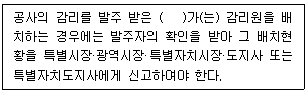
- 공사업자
- 용역업자
- 시공업자
- 설계업자
(정답률: 74%)
94. 다음 운영체제의 방식 중 가장 먼저 사용된 방식은?
- Batch Processing
- Time Slicing
- Multi-Threading
- Multi-Tasking
(정답률: 75%)
95. 다음 중 무선랜의 보안 문제점에 대한 대응책으로 틀린 것은?
- AP보호를 위해 전파가 건물 내부로 한정되도록 전파 출력을 조정하고 창이나 외부에 접한 벽이 아닌 건물 안쪽 중심부, 특히 눈에 띄지 않는 곳에 설치한다.
- SSID(Service Set Identifier)와 WEP(Wired Equipment Privacy)를 설정한다.
- AP의 접속 MAC주소를 필터링한다.
- AP의 DHCP를 가능하도록 설정한다.
(정답률: 58%)
96. 다음 중 스위치와 허브에 대한 설명으로 올바른 것은?
- 전통적인 케이블 방식의 CSMA/CD는 허브라는 장비로 대체되었다.
- 임의의 호스트에서 전송한 프레임은 허브에서 수신하며, 허브는 목적지로 지정된 호스트에만 해당 데이터를 전달한다.
- 허브는 외형적으로 스타형 구조를 갖기 때문에 내부의 동작 역시 스타형 구조로 작동되므로 충돌이 발생하지 않는다.
- 스위치 허브의 성능 문제를 개선하여 허브로 발전하였다.
(정답률: 56%)
97. 다음 중 '5단계 명령어 파이프라'에 인가된 클럭의 주파수가 1[GHz]이고, 이에 명령어 200개를 실행시키고자 한다. 이때 클럭 주기는 얼마인가?
- 0.1[ns]
- 1[ns]
- 10[ns]
- 100[ns]
(정답률: 55%)
98. 개인정보보호법 시행령에 따르면 공공기관이 영상정보처리기기의 설치·운영에 관한 사무를 위탁하는 경우에는 문서로 하여야 한다. 다음 중 해당 문서에 포함될 내용으로 틀린 것은?
- 위탁 처리비용
- 위탁하는 사무의 목적 및 범위
- 재 위탁 제한에 관한 사항
- 영상정보에 대한 접근 제한 등 안정성 확보 조치에 관한 사항
(정답률: 66%)
99. 클라우드 컴퓨팅의 서비스 유형과 적용 서비스가 틀린 것은?
- IaaS : AWS(AmazonWeb Service)
- SaaS : 전자메일서비스, CRM, ERP
- PaaS : Google AppEngine, Microsoft Asure
- BPaaS : 컴퓨팅 리소스, 서버, 데이터센터 패브릭, 스토리지
(정답률: 58%)
100. 다음 중 누산기(Accumulator)에 대한 설명으로 맞는 것은?
- 연산장치에 있는 레지스터의 하나로서 연산 결과를 기억하는 장치이다.
- 기억장치 주변에 있는 회로인데 가감승제 계산 논리 연산을 행하는 장치이다.
- 일정한 입력 숫자들을 더하여 그 누계를 항상 보존하는 장치이다.
- 정밀 계산을 위해 특별히 만들어 두어 유효 숫자 개수를 늘리기 위한 것이다.
(정답률: 63%)